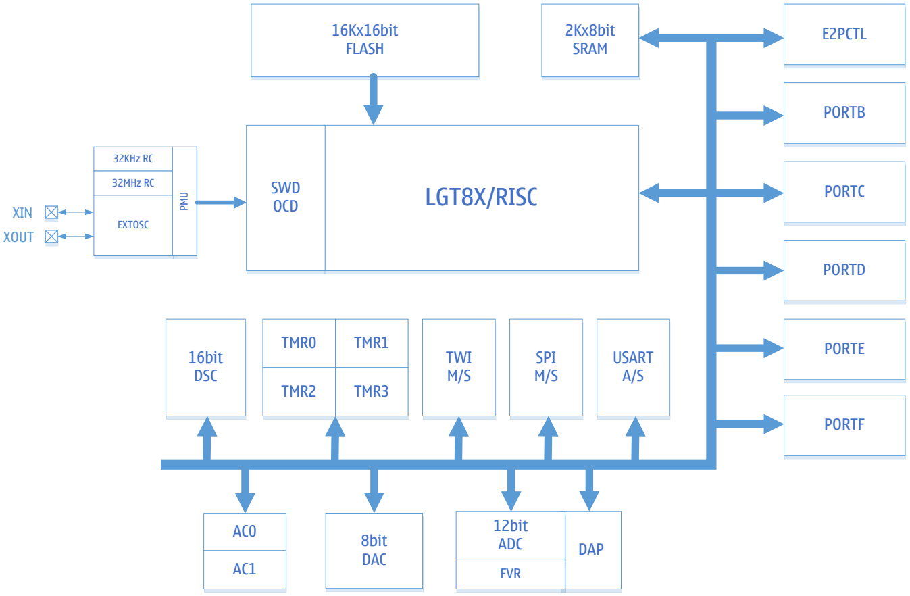
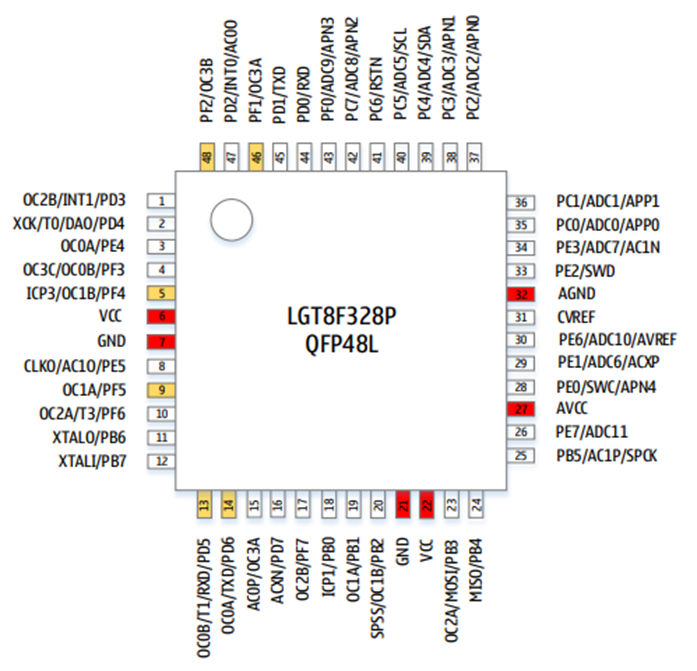
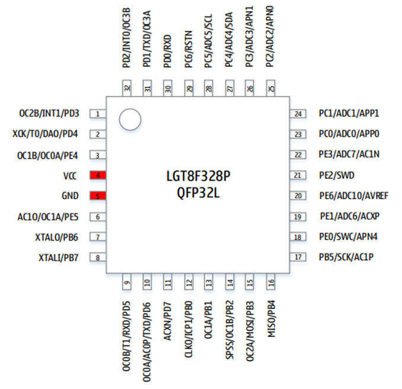
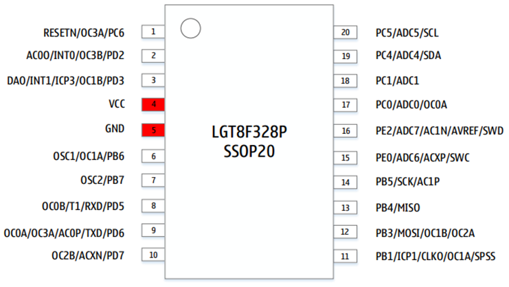

Описание
Микроконтроллеры серии LGT8FXP, разработанные компанией Logic Green Technologies, содержат три варианта микросхем:
LGT8F88P,
LGT8F168P,
LGT8F328P.
Функции
Высокопроизводительное 8-битное ядро LGT8FXP с низким энергопотреблением
Расширенная архитектура RISC
131 инструкция, более 80% выполняются за один такт
32x8 рабочих регистров общего назначения
Эффективность выполнения до 32MIPS на частоте 32МГц
Внутренний однотактный умножитель (8x8)
Память
32 Кбайт встроенной флэш-памяти
2 Кбайт оперативной памяти SRAM
Интерфейс E2PROM для программирования встроенной флэш-памяти
Шифрование программы для обеспечения безопасности пользовательского кода
Периферия
Два 8-битных таймера
Два 16-битных таймера
Внутренний калиброванный RC-генератор 32 кГц
Поддерживает до 9 выходов ШИМ, с управлением мертвой зоной
12-канальный 12-битный аналого-цифровой преобразователь (АЦП)
Внутреннее или внешнее опорное напряжение
Дифференциальный усилитель с программируемым коэффициентом усиления (1/8/16/32)
Режим автоматического контроля порогового напряжения
Два аналоговых компаратора (AC) для расширения входных каналов АЦП
Внутренний калибруемый источник опорного напряжения 1,024В/2,048В/4,096В ±1%
8-битный цифро-аналоговый преобразователь (ЦАП), который можно использовать в качастве источника опорного напряжения
Сторожевой таймер (WDT)
Синхронный/асинхронный последовательный интерфейс (USART/SPI)
Синхронный интерфейс (SPI), режим работы «ведущий/ведомый»
Двухпроводной последовательный интерфейс (TWI), совместимый с I2C
16-разрядный цифровой вычислительный блок ускорения (DSC), поддерживающий прямой 16-разрядный доступ к памяти
Специальные функции
Двухпроводной интерфейс SWD для программирования и отладки на кристалле
Внешние источники прерываний
Встроенная схема сброса при включении питания (POR) и программируемая схема обнаружения низкого напряжения питания (LVD)
Встроенный RC-генератор 32МГц с точностью калибровки 1%
Встроенный RC-генератор 32кГц с точностью калибровки 1%
Поддержка внешнего кварцевого резонатора 32,768кГц или 400кГц ~ 32МГц
6x высокоточных двухтактных входов/выходов, поддерживающих высокоскоростные ШИМ
Корпус: QFP48L, QFP32L, SSOP20L
Напряжение питания: 1,8В ~ 5,5В
Минимальное энергопотребление: 1мкА при 3,3В
Рабочая частота: 0 ~ 32МГц
Температурный диапазон: -40С ~ +85С
HBM ESD: > 4 кВ
Структурная схема

Название |
Описание |
|---|---|
SWD |
Модуль отладки и внутрисхемного программирования |
LGT8X |
8-битное высокопроизводительное RISC-ядро |
E2PCTL |
Контроллер FLASH памяти |
PMU |
Модуль управления энергопотреблением |
PORTB/C/D/E/F |
Универсальные программируемые порты ввода/вывода |
DSC |
16-разрядный цифровой блок ускорения |
ADC DAP FVR |
8-канальный 12-разрядный АЦП c дифференциальным усилителем. |
AC0/1 |
Аналоговый компаратор |
TMR0/1/2/3 |
8/16-разрядный таймер/счетчик, ШИМ-контроллер |
WDT |
Сторожевой таймер |
SPI M/S |
Ведущий-ведомый SPI-контроллер |
TWI M/S |
Двухпроводной интерфейс, совместимый с протоколом I2C |
USART |
Синхронный/асинхронный последовательный приемопередатчик |
DAC |
8-разрядный цифро-аналоговый преобразователь |
Корпус
QFP48L

QFP32L

SSOP20

Описание выводов
В серии LGT8FX8P все порты доступны только в корпусе QFP48L. В других корпусах несколько портов ввода-вывода объединяются на одном выводе микросхемы. При настройке направления вывода микросхемы на это необходимо обратить особое внимание. В следующей таблице перечислены подключения портов к выводам микросхемы:
QFP48 |
QFP32 |
SSOP20 |
Описание |
|---|---|---|---|
01 |
01 |
03 |
PD3/INT1/OC2B |
02 |
02 |
03 |
PD4/DAO/T0/XCK |
03 |
03 |
- |
PE4/0C0A |
04 |
- |
- |
PF3/OC3C/OC0B |
05 |
03 |
03 |
PF4/OC1B/ICP3 |
06 |
04 |
04 |
VCC |
07 |
05 |
05 |
GND |
08 |
06 |
- |
PE5/AC1O/CLKO |
09 |
06 |
06 |
PF5/OC1A |
10 |
- |
- |
PF6/T3/OC2A |
11 |
07 |
06 |
PB6/XTALO |
12 |
08 |
07 |
PB7/XTALI |
13 |
09 |
08 |
PD5/RXD/T1/OC0B |
14 |
10 |
09 |
PD6/TXD/OC0A |
15 |
10 |
09 |
AC0P/0C3A |
16 |
11 |
10 |
PD7/ACXN |
17 |
- |
10 |
PF7/OC2B |
18 |
12 |
11 |
PB0/ICP1 |
19 |
13 |
11 |
PB1/OC1A |
20 |
14 |
12 |
PB2/OC1B/SPSS |
21 |
- |
- |
GND |
22 |
- |
- |
VCC |
23 |
15 |
12 |
PB3/MOSI/OC2A |
24 |
16 |
13 |
PB4/MISO |
25 |
17 |
14 |
PB5/SPCK/AC1P |
26 |
- |
- |
PE7/ADC11 |
27 |
- |
- |
AVCC |
28 |
18 |
15 |
PE0/SWC/APN4 |
29 |
19 |
15 |
PE1/ADC6/ACXP |
30 |
20 |
16 |
PE6/ADC10/AVREF |
31 |
- |
- |
CVREF |
32 |
- |
- |
AGND |
33 |
21 |
16 |
PE2/SWD |
34 |
22 |
16 |
PE3/ADC7/AC1N |
35 |
23 |
17 |
PC0/ADC0/APP0 |
36 |
24 |
18 |
PC1/ADC1/APP1 |
37 |
25 |
- |
PC2/ADC2/APN0 |
38 |
26 |
- |
PC3/ADC3/APN1 |
39 |
27 |
19 |
PC4/ADC4/SDA |
40 |
28 |
20 |
PC5/ADC5/SCL |
41 |
29 |
1 |
PC6/RESETN |
42 |
- |
- |
PC7/ADC8/APN2 |
43 |
- |
- |
PF0/ADC9/APN3 |
44 |
30 |
- |
PD0/RXD |
45 |
31 |
- |
PD1/TXD |
46 |
31 |
1 |
PF1/OC3A |
47 |
32 |
2 |
PD2/INT0/AC0O |
48 |
32 |
2 |
PF2/OC3B |